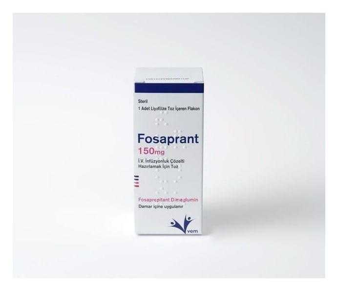

Fosaprant 150 mg İ.V. İnfüzyonluk Çözelti Hazırlamak İçin Toz, 1 Adet

Ne için kullanılır
KT · Bölüm 1FOSAPRANT, vücudunuzda aprepitanta dönüştürülen aktif fosaprepitant maddesini içerir. Fosaprepitant, aprepitantın ön ilacıdır ve intravenöz olarak uygulandığında hızla aprepitanta
dönüşür. Aprepitant “nörokinin 1 (NK
) reseptör antagonistleri” olarak adlandırılan bir ilaç grubuna aittir. Beyinde mide bulantısı ve kusmayı kontrol eden özel bir alan vardır. FOSAPRANT o bölgedeki sinyalleri engelleyerek çalışır, böylece bulantı ve kusmayı azaltır.
FOSAPRANT, yetişkinlerde, ergenlerde ve 6 ay veya daha büyük yaştaki çocuklarda, güçlü ve orta dereceli bulantı ve kusmanın tetikleyicisi olan kemoterapinin (kanser tedavisi) neden olduğu bulantı ve kusmayı önlemek için diğer ilaçlar ile birlikte kullanılır. FOSAPRANT, infüzyonluk çözelti hazırlamak için beyaz veya beyazımsı tozdur. 1 adet renksiz cam flakon içerisinde kullanıma sunulmaktadır.